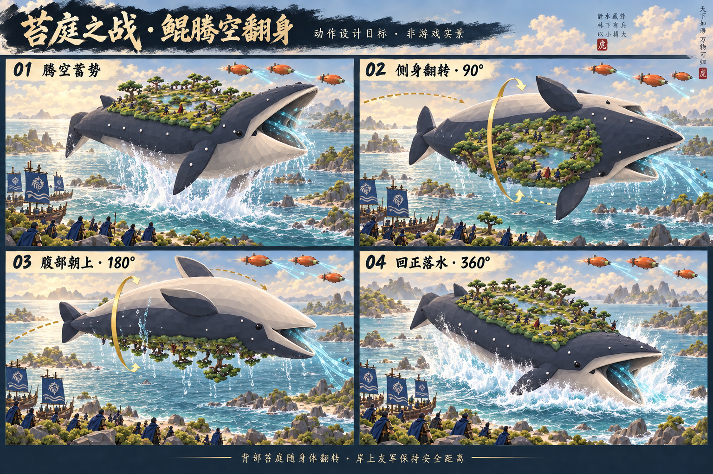

岸石修正 · 2026-09-20
大块青绿色物体确认为旧版18块椭圆碎石组。已从Web原游戏及Godot战场、总世界移除，改为实际海岸交界的8块低矮灰石，成簇而不封闭成环。下图为修改后的真实战斗，士兵与林下空间已露出；浅黄绿色地面块属于另一组苔地，不冒充灰色岸石。

网页入口检查 · 修改后24项战斗检查通过 · 岸线位置检查
修正跨章节延迟；实际撤离后才翻身。地形查询和镜头外绘制已优化，保留原资产。查看实际截图、性能与验证范围
进入 8931 原游戏 · 2026-09-20：Godot 全战斗功能回归通过，鲲背苔地与松林继续调整。尚未达到整张目标图的视觉完成度。
排除197个树干冲突格点，保留57个潜伏位。50人约74.6秒到齐，活动中心最小间距0.70米，4176次采样未检测到身体穿过树干。27项整场战斗回归通过，保留胜利翻身和摆尾。
大块青绿色物体确认为旧版18块椭圆碎石组。已从Web原游戏及Godot战场、总世界移除，改为实际海岸交界的8块低矮灰石，成簇而不封闭成环。下图为修改后的真实战斗，士兵与林下空间已露出；浅黄绿色地面块属于另一组苔地，不冒充灰色岸石。
网页入口检查 · 修改后24项战斗检查通过 · 岸线位置检查

Aircraft 发现与吸取；受到攻击才触发重甲增援。SOCCO 独立运输登陆，不挂在 aircraft 下方。
胜利且友军撤离后播放一次：3秒升空、6秒整体翻身、3秒回落。Godot完整战斗27项通过；Web19项伏击回归及合成输入触发检查通过。水花与翻身伤害未新增。
动作目标与已接入的胜利收尾：腾空蓄势 → 侧翻90° → 腹部朝上180° → 回正360°落水。背部苔庭随身体旋转；友军安全与镜头、碰撞需在动画落地时单独检查。此图用于动作意图，鳍、嘴和背部地形应使用原模型稳定拓扑，不逐帧重建造型。



沿鲲背延展至原长1.35倍、增加六处浅池，重新避让松根、町步石与掩护位。25 株松树、50 个真实林下位置保留。

同源几何与树位同步；Godot 仍保留原静态岸边伏击位，尚未统一为 Web 的随岛掩护方式。2026-09-20 已修复：58 个真实安全位置，可供 50 人独立潜伏。23项固定步长实战检查通过并到达胜利，仍待最终视觉验收。
真实出航、潜伏等待信号、受击增援、鲲反击、撤离复位；没有注入命中或登陆事件。已到达胜利。新跳板连接干地路径；此处是上一轮截图，最新上下船调度见下方24项报告。


本轮 19 项通过：50 人从船队进入掩护，等待期间不开火；发现鲲后进入反击，伏击本身不触发重甲空降。使用测试剧情前提与舰队诊断位置，非完整自然通关。


50人约73秒到齐，最小活动中心间距0.71米；船内等待队列最高24人。返船共享路线预约消除互锁。24项完整战斗检查、实际胜利和复位通过。
范围：上下船活动乘员；不代表静止人群、树干、伸出武器的通用绕行。Web保留已通过流程，此项为Godot实现。
最高5棵松树降低22.5%，中层5棵降低10.8%，矮松保留原高度。25棵原松、50个冠下位置和19项Web实战检查通过。


Godot 统一原松色盘，按球面战场朝向设置暖主光、冷补光与阴影；以下是实际渲染，不是目标图。

对同一轮真实战斗检查六个方位，将“近看阵列”固定为岸外低角度，避免继承上一个镜头方位而被船帆或鲲侧身挡满。上方仍能看到鲲腹部，这是当前静态岸边潜伏布局的真实关系，尚不是目标图的随岛战场。

最高与中层古松已经压低，部分簇群仍显拥挤；Godot鲲体及林下阴影偏重，近景镜头上缘会被升起的鲲遮挡。Godot静态岸边潜伏与Web随岛掩护尚未统一，下一步需优先统一这项空间关系，再收敛舰队构图与明暗。不能仅凭这次导入认定目标图已复刻。